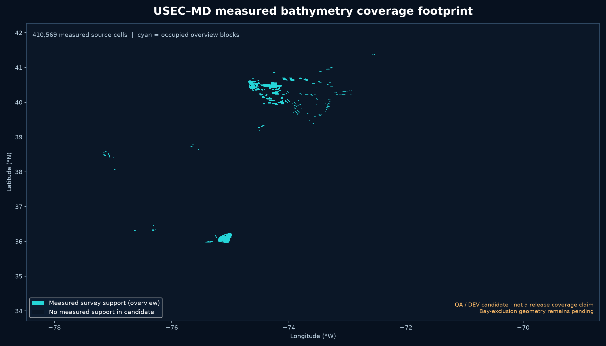
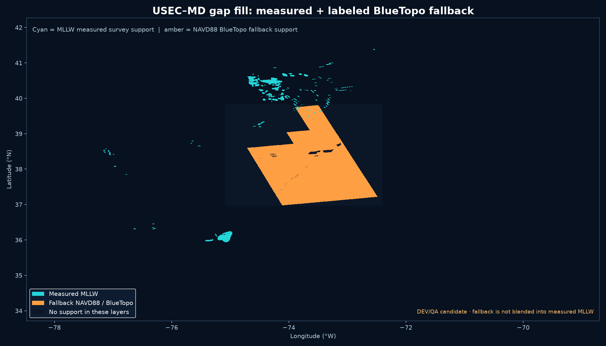
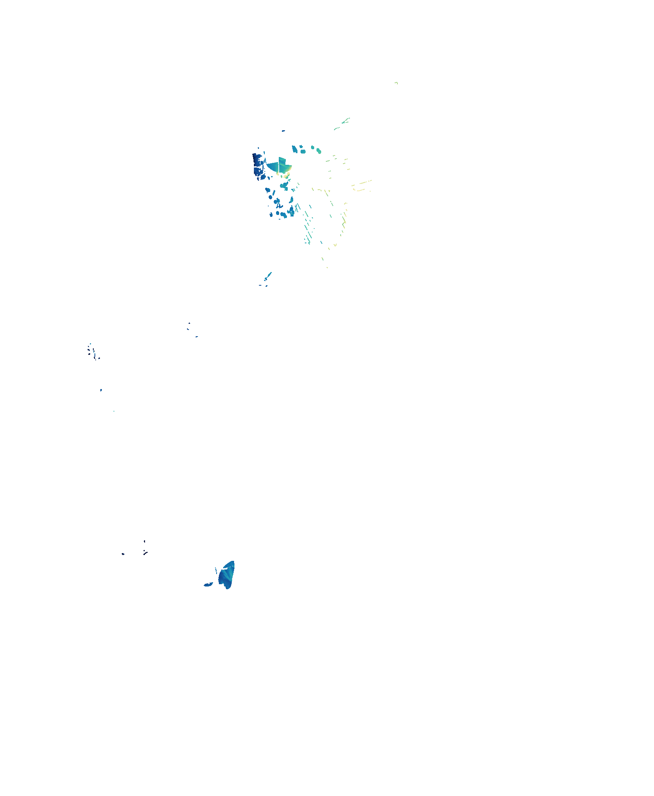
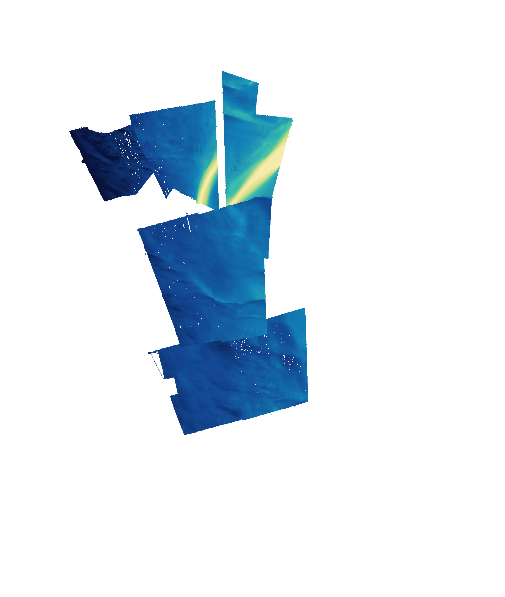
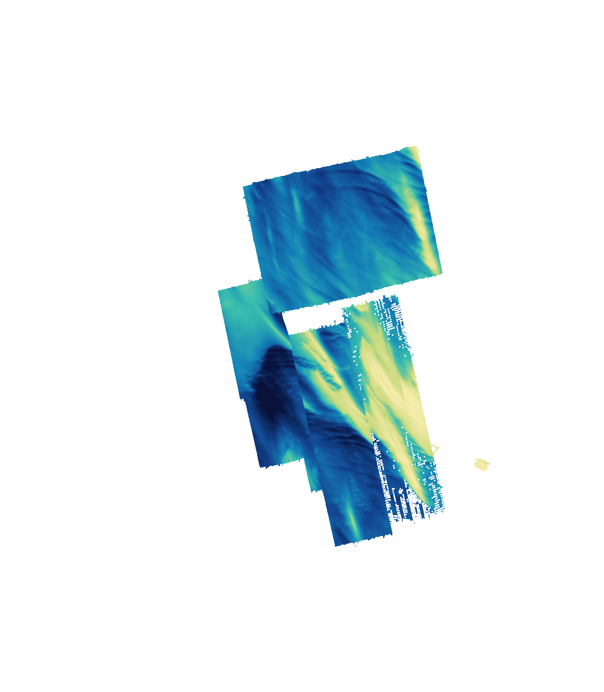
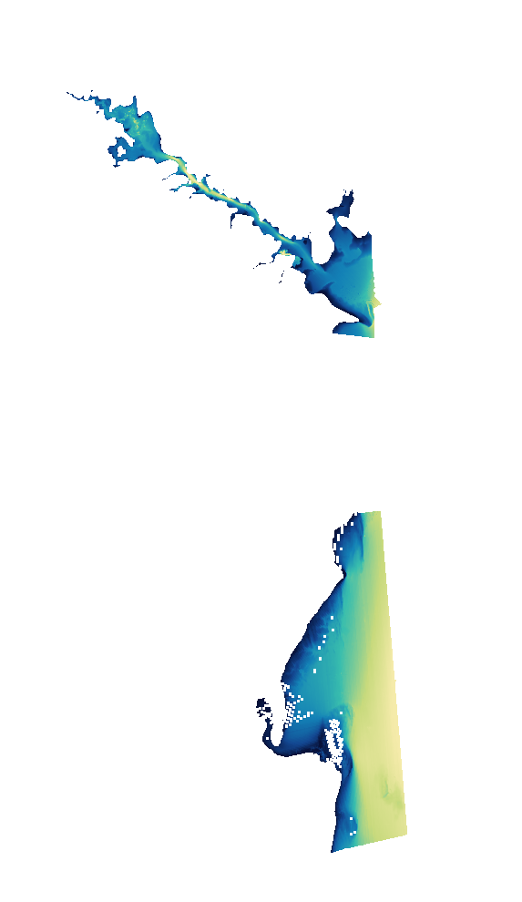
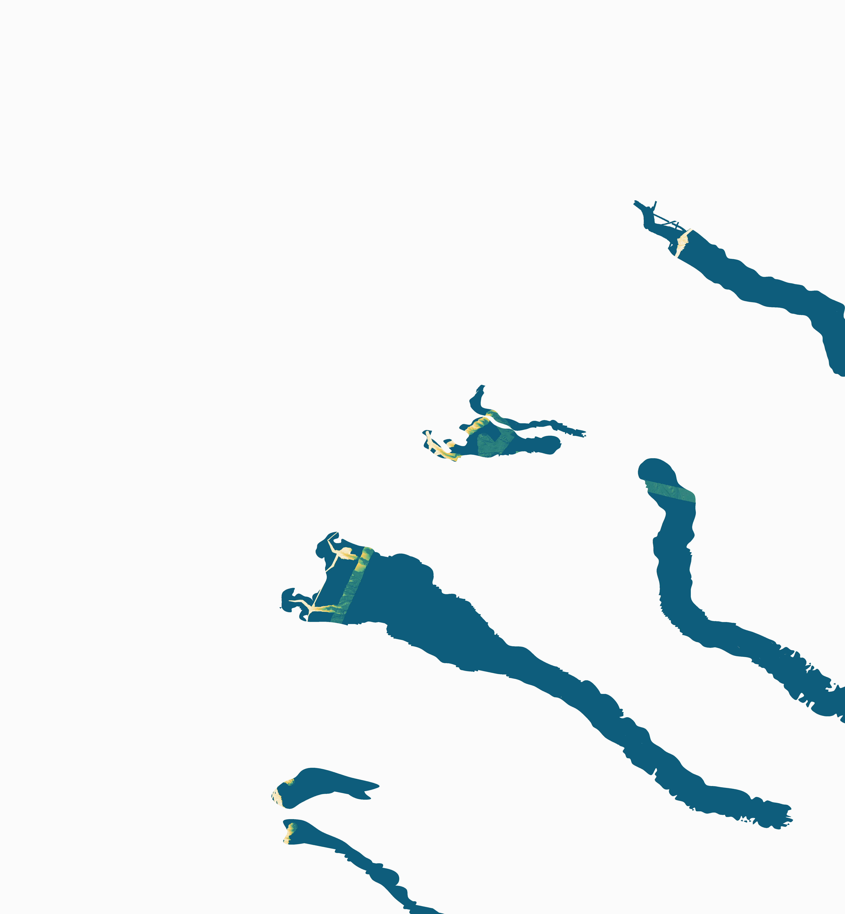
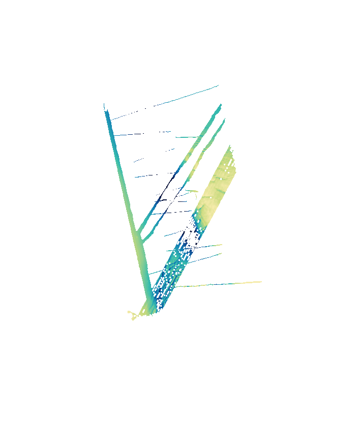

FishEdge · CTO bathymetry pipeline · DEV preview
USEC–MD coverage-gap fill
A provenance-preserving view of the measured survey work completed so far. It shows where qualified local survey derivatives now contribute bathymetry, which gaps remain, and why substrate is not being invented from depth.
QA candidate · production untouched410,569
regional measured cells
567,909
northern shelf accepted cells
249,227
southern shelf accepted cells
13,674
immutable tiles hashed
342
deduplicated register rows
0
tile source-read errors
What the gap-fill work did
- ✓ Converted and retained qualified MLLW survey derivatives with masks, uncertainty and provenance.
- ✓ Built north and south open-shelf measured patches plus a regional measured-source candidate.
- ✓ Used immutable, hashed tile assembly; no production files were changed.
- ! Remaining blank areas are unresolved data gaps, not silently interpolated measurements.
Geographic context and occupied support
This is the primary inspection view. The basemap shows the data relative to shore; polygons are coarse occupied-mask previews, not survey bounding boxes. Toggle layers to distinguish measured MLLW, NAVD88 BlueTopo fallback, and the native F00920 enhancement.
Measured MLLWBlueTopo fallback NAVD88F00920 native 10 mWorking region
Basemap © OpenStreetMap contributors. Coverage context GeoJSON: inspect source. Bay closures and outside-bays accounting remain provisional.
Where the candidate has measured coverage

Measured coverage footprintCyan = one or more retained survey cells; dark = no measured support

Gap-fill overlayCyan = MLLW measured · amber = separately labeled NAVD88 BlueTopo fallback
Measured bathymetry renders

Regional measured candidate50 m display grid · 9-band source product

Northern New Jersey/New York shelfH13474–H13480 measured sources

Southern Delmarva/Virginia shelfH13094/H13095/H13326/H13327 measured sources

Chesapeake approach patchNative-pixel averaging · MLLW

Canyon/shelf-break priority viewAcquisition lead; not blended into MLLW base

F00920 native enhancement0.5 m MLLW source aggregated to 10 m · 18,294 accepted cells
Next coverage gaps
- Acquire and process the highest-value Bigelow EM2040 shelf leads; current catalog links include access failures.
- Qualify intersecting BlueTopo contributors as separately labeled NAVD88/mixed-source fallback.
- Replace provisional bay exclusions with authoritative mouth/interior geometry before claiming outside-bays percentages.
- Acquire calibrated backscatter or sediment observations. Until then, substrate is explicitly UNKNOWN.